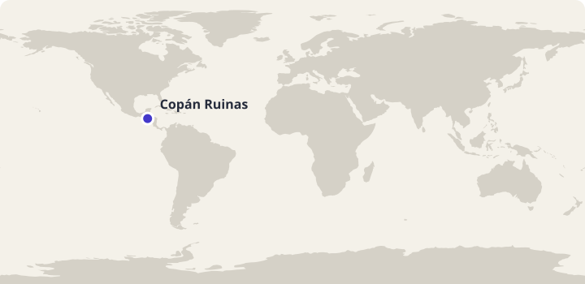
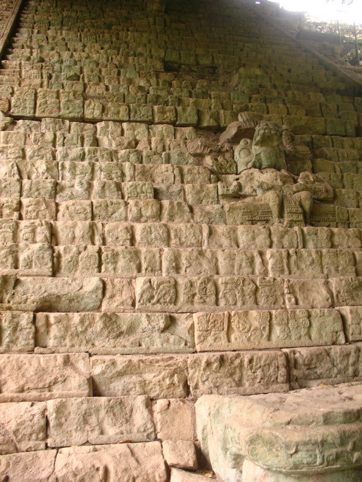

Arbeidsutkast · til lærervurdering
45 minutter · les, oversett og sammenlign
Honduras: Un día en Copán Ruinas
En lørdag med Lucía: mat, familie og spor fra fortiden.
Bli med Lucía gjennom en dag i Copán Ruinas. Les høyt og oversett muntlig i par. Svar på spørsmålene, snakk om hverdagslivet og øv på ordene fra teksten. Lucía og familien er fiktive; stedene og kulturinnslagene bygger på kildene nedenfor.

Copán Ruinas i Honduras. Kartgrunnlag: Natural Earth. Markøren viser byens omtrentlige plassering.
Les og oversett i par
- Les teksten høyt sammen. Bytt på å lese ett avsnitt hver.
- Oversett ett avsnitt om gangen muntlig til norsk. Pek eller trykk på understrekede ord når dere trenger hjelp.
- Hjelp hverandre med ord og setninger dere er usikre på.
Pek eller trykk på understrekede ord i teksten for å se norsk oversettelse. Numrene i bildene viser bildeord.
Mellom-Amerika
Un día en Copán Ruinas

Bildet kunne ikke lastes. Du kan fortsatt lese teksten og bruke ordoppslagene.
Om bildet
Copan (3831028715).jpgDato: 2009Nedskalert av Commons; ikke beskåret. Nummererte ordpunkter lagt over bildet.
- la escalera trappen
- el árbol treet
- la piedra steinen
Lucía, y en Copán Ruinas, del oeste de Honduras. mi casa hay , y . y no tengo . para . con y porque durante .
En una mesa la plaza unas . La mía tiene una , y . un poco de . Las , pero cada persona puede . comemos, ella una historia de cuando . Yo y .


hacia de Copán. Este lugar y de una ciudad maya. Vemos figuras y con . dice que cada detalle . las . Me siento y dibujo una figura en mi cuaderno.
Para mí, Copán Ruinas no es un lugar para visitar monumentos. Es también el sitio donde estudio, y saludo a . Algunas familias trabajan en , otras en restaurantes o en actividades relacionadas con las visitas. En la plaza a una amiga. Hablamos de un partido que queremos jugar .
al pueblo. Compramos fruta y pan . trae y yo en la mochila. Por la tarde mi dibujo y escribo tres palabras nuevas. Mi hermano quiere saber los de la escalinata. Le digo que tengo mucho que aprender.
Por la noche . el cuaderno a mi familia y explico lo que más me gusta del paseo. Mi padre quiere ver el dibujo y sonríe. jugamos al fútbol, pero termino el día con una pregunta: ¿qué otras historias podemos nuestra casa?
Faktakilder: UNESCO: Maya Site of Copan · CATA: Gastronomía en Centroamérica. Vis til teksten når du begrunner svarene.
Spørsmål til teksten
Velg ett svar på hvert spørsmål.
Utforsk kultur
Sammenlign og spør
- På hvilke måter ligner Lucías lørdag på en dag på et sted du kjenner?
- Hva lærer du om både fortiden og hverdagslivet i Copán Ruinas?
- Hvilken del av dagen ville du helst vært med på? Forklar hvorfor.
- Hvilket spørsmål ville du stilt Lucía om byen hennes?
Åpne spørsmål har flere rimelige svar. Lytt til partnerens begrunnelse.
Bruk språket i par
Planlegg en liten tur på et sted dere kjenner. Velg noe å se, noe å gjøre og noe å spise. Beskriv planen for partneren med tre spanske setninger.
Prøv en utvidelse
Gi et kort råd til en som skal besøke Copán Ruinas.
Ord du kan bruke videre
Øv på de ti ordene fra teksten. Prøv å huske svaret før du snur kortet.
Lær Honduras-gloseneValgfritt glosesett: Honduras: Un día en Copán Ruinas. Kom tilbake og repeter ordene. I glosemodus vises det når ordene er klare for repetisjon.
Se de ti ordene
| Spansk | Norsk |
|---|---|
| desayunar | å spise frokost |
| la abuela | bestemor |
| la mochila | ryggsekk |
| el cuaderno | skrivebok |
| los frijoles | bønner |
| el queso | ost |
| la plaza | torg |
| la piedra | stein |
| dibujar | å tegne |
| visitar | å besøke |
Dekk den spanske kolonnen. Si ordet før du sjekker. Bytt deretter retning og øv på ordene du er usikker på.
| Spansk | Norsk |
|---|---|
| desayunar | å spise frokost |
| la abuela | bestemor |
| la mochila | ryggsekk |
| el cuaderno | skrivebok |
| los frijoles | bønner |
| el queso | ost |
| la plaza | torg |
| la piedra | stein |
| dibujar | å tegne |
| visitar | å besøke |